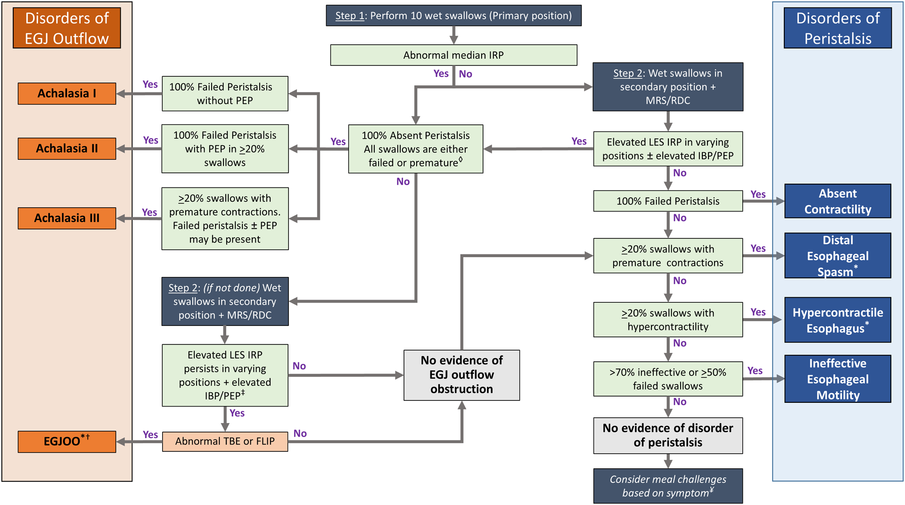
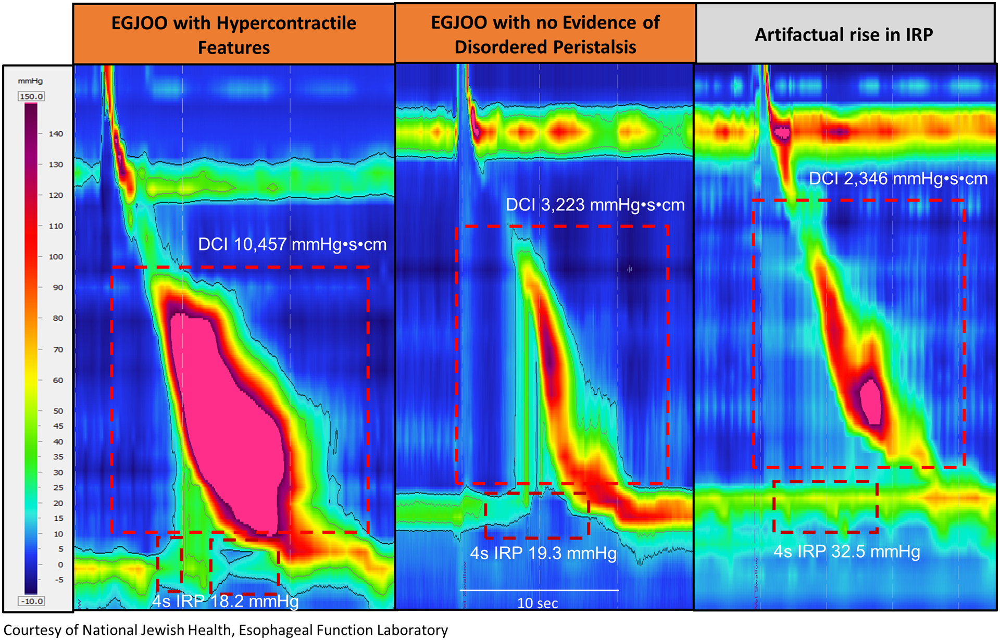

圖：弛緩不能症三種亞型的典型 HRM 表現。圖片來源：同上。
圖：弛緩不能症三種亞型的典型 HRM 表現。圖片來源：同上。芝加哥分類 (Chicago Classification, CC) 是國際上用於判讀高解析度食道壓力測定 (High-Resolution Manometry, HRM) 結果的標準化分類系統。自 2008 年首版發布以來，歷經多次修訂，第四版 (v4.0) 於 2021 年發表，代表了目前最新的國際共識。

圖：Chicago Classification v4.0 分層診斷架構圖。圖片來源：Yadlapati R, et al. Neurogastroenterology & Motility. 2021;33(1):e14058. CC-BY. 原文：PMC8034247 圖：弛緩不能症三種亞型的典型 HRM 表現。圖片來源：同上。

圖：食道胃接合處流出道阻塞 (EGJOO) 的 HRM 圖形。圖片來源：同上。 圖：瀰漫性食道痙攣 (DES) 與鑿岩機食道 (Jackhammer) 的 HRM 圖形。圖片來源：同上。
圖：瀰漫性食道痙攣 (DES) 與鑿岩機食道 (Jackhammer) 的 HRM 圖形。圖片來源：同上。
| 項目 | CCv3.0 | CCv4.0 |
|---|---|---|
| 測試體位 | 僅仰臥位 | 仰臥位 + 直立位 |
| 激發測試 | 非必要 | 建議納入 MRS/RDC |
| 正常值 | 僅 ManoScan | 三套系統分別建立 |
| EGJOO 診斷 | 較寬鬆 | 更嚴格（需多重證據） |
| 結論等級 | 無 | 引入確定性 (conclusive) vs 不確定 (inconclusive) |
| 蠕動儲備 | 未納入 | MRS 評估蠕動儲備功能 |
| 指標 | 全稱 | 測量方式 | 正常值（ManoScan，仰臥位） |
|---|---|---|---|
| IRP | Integrated Relaxation Pressure | 吞嚥後 10 秒內最低 4 秒壓力平均值 | < 15 mmHg |
| DCI | Distal Contractile Integral | 遠端蠕動波壓力-時間-長度積分 | 450-8000 mmHg-s-cm |
| DL | Distal Latency | UES 鬆弛至 CDP 的時間 | > 4.5 秒 |
| Break | Peristaltic Break | 20 mmHg 等壓線下的缺口長度 | < 5 cm |
| 指標 | 正常值（ManoScan，直立位） |
|---|---|
| IRP | < 12 mmHg |
| DCI | 依系統建立之正常值 |
重要：CCv4.0 強調不同 HRM 系統有不同正常值。臨床判讀時必須使用與所用系統對應的正常值。
CCv4.0 採用嚴格的階層式診斷流程，依優先順序由上而下判讀。高層級診斷一旦成立，即不再考慮低層級診斷。
共同特徵：IRP 升高（仰臥位和/或直立位）+ 無正常蠕動
| 分型 | 蠕動特徵 | 臨床特點 |
|---|---|---|
| Type I（經典型） | 100% 蠕動缺失 (failed peristalsis)，無食道加壓 | 最傳統的表現；食道可能擴張 |
| Type II（伴全食道加壓） | 蠕動缺失，但 ≥ 20% 吞嚥出現全食道加壓 (panesophageal pressurization) | 最常見類型；治療反應最佳 |
| Type III（痙攣型） | 蠕動缺失，但 ≥ 20% 吞嚥出現早發收縮 (premature/spastic contraction，DL < 4.5s) | 治療反應較差；需區分 DES |
CCv4.0 診斷確定性： - 確定性診斷 (conclusive)：仰臥位 IRP 升高 + 直立位 IRP 升高 + 符合蠕動特徵 - 不確定性 (inconclusive)：僅仰臥位或僅直立位 IRP 升高 → 需額外佐證（如 FLIP、食道鋇劑攝影）
EGJOO 診斷要求（CCv4.0）：
| 條件 | 要求 |
|---|---|
| 仰臥位 IRP | 升高 |
| 直立位 IRP | 升高 |
| 蠕動 | 保留（非 achalasia 型態） |
| 臨床佐證 | 需有相關症狀或客觀佐證 |
臨床要點：CCv4.0 認為許多 v3.0 診斷的 EGJOO 可能是偽陽性 (false positive)。僅仰臥位 IRP 升高而直立位正常者，不應診斷為 EGJOO。建議搭配 FLIP 和/或食道鋇劑攝影進一步評估。
前提：IRP 正常（已排除第一層診斷）
| 診斷 | 英文名稱 | 診斷標準 | 臨床意義 |
|---|---|---|---|
| 遠端食道痙攣 | Distal Esophageal Spasm (DES) | ≥ 20% 吞嚥的 DL < 4.5 秒（早發收縮） | 可能導致吞嚥困難和胸痛 |
| 過強蠕動 | Jackhammer Esophagus | ≥ 20% 吞嚥的 DCI > 8000 mmHg-s-cm | 可能導致胸痛和吞嚥困難 |
| 蠕動缺失 | Absent Contractility | 100% 吞嚥的 DCI < 100 mmHg-s-cm | 嚴重蠕動功能喪失；抗逆流手術禁忌 |
CCv4.0 要點： - 主要蠕動障礙在仰臥位和直立位都應呈現異常時最為可靠 - 僅在一個體位出現異常者，診斷確定性較低
前提：IRP 正常 + 不符合主要蠕動障礙
| 診斷 | 英文名稱 | 診斷標準 | 臨床意義 |
|---|---|---|---|
| 無效食道蠕動 | Ineffective Esophageal Motility (IEM) | > 70% 無效吞嚥（DCI < 450 或 break > 5 cm） | 可能影響食道清除功能；與 GERD 相關 |
| 碎裂蠕動 | Fragmented Peristalsis | > 50% 碎裂吞嚥（DCI > 450 但 break > 5 cm） | 臨床意義較不確定 |
CCv4.0 對 IEM 的補充： - MRS 後蠕動儲備功能正常者，IEM 的臨床意義可能較低 - MRS 後蠕動儲備功能缺失者，IEM 可能有更重要的臨床意義（例如影響抗逆流手術決策）
flowchart TD
A[HRM 檢查完成<br/>仰臥位 + 直立位 + 激發測試] --> B{仰臥位 IRP 升高?}
B -->|是| C{直立位 IRP 也升高?}
B -->|否| H{蠕動功能評估}
C -->|是| D{蠕動型態?}
C -->|否| G[不確定性 EGJOO<br/>需進一步評估<br/>FLIP / 鋇劑攝影]
D -->|無蠕動 + 無加壓| D1[確定性 Type I Achalasia]
D -->|無蠕動 + 全食道加壓 >=20%| D2[確定性 Type II Achalasia]
D -->|無蠕動 + 早發收縮 >=20%| D3[確定性 Type III Achalasia]
D -->|蠕動保留| D4[確定性 EGJOO<br/>需排除機械性阻塞]
H -->|DL ﹤4.5s >=20%| I[DES 遠端食道痙攣]
H -->|DCI ﹥8000 >=20%| J[Jackhammer 過強蠕動]
H -->|100% DCI ﹤100| K[Absent Contractility<br/>蠕動缺失]
H -->|﹥70% 無效| L[IEM 無效食道蠕動]
H -->|﹥50% 碎裂| M[Fragmented Peristalsis<br/>碎裂蠕動]
H -->|以上皆非| N[正常食道運動功能]| 指標 | 仰臥位正常值 | 直立位正常值 |
|---|---|---|
| IRP (中位數) | < 15 mmHg | < 12 mmHg |
| DCI | 450-8000 mmHg-s-cm | 依建立之常模 |
| DL | > 4.5 秒 | > 4.5 秒 |
| 無效蠕動定義 | DCI < 450 或 break > 5 cm | – |
| 缺失蠕動定義 | DCI < 100 | – |
| 指標 | 仰臥位正常值 |
|---|---|
| IRP (中位數) | < 22 mmHg（水灌注式較高） |
| DCI | 依系統建立之常模 |
| 指標 | 仰臥位正常值 |
|---|---|
| IRP (中位數) | 依系統建立之常模 |
關鍵提醒：不同系統的正常值不可直接套用。臨床判讀務必參考所使用系統的專屬正常值。
CCv4.0 引入了診斷確定性的概念：
| 確定性等級 | 含義 | 處理建議 |
|---|---|---|
| 確定性 (conclusive) | 仰臥位 + 直立位結果一致 | 可直接依據診斷進行治療決策 |
| 不確定性 (inconclusive) | 僅一個體位出現異常 | 需要額外檢查佐證（FLIP、鋇劑攝影、重複 HRM） |
↑📋 請填入貴院資料：
- 本院負責科別：_______________
- 聯絡電話 / 分機：_______________
- 門診時間：_______________
- 主治醫師：_______________
- 本院檢查設備與特色：_______________